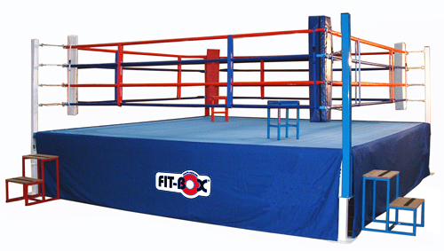

A boksz története
A boksz története
Úgy tartják, hogy legelőször a mai Etiópia területén élő népcsoportok használtak pusztakezes technikákat, több mint 6000 évvel ezelőtt. Ugyan a harcosok közelharci kiképzésének még nem sok köze volt a ma ökölvívásként ismert sportághoz, de mindenképpen hozzájárultak annak kialakulásához. Néhány száz év eltéréssel már az egyiptomi régióból is találtak ökölvívókat ábrázoló régészeti leleteket, ahonnan a boksz ezen korai formája meghódította a mediterrán térséget. Időszámításunk előtt 1500 környékén az eddig említett térségektől függetlenül elindult az ökölvívás egy másik fajtája is az ókori Kréta területén. Érdekes módon az olimpiai számok sorába csupán Krisztus előtt 688-ban került be, egyre növekvő népszerűség mellett. Igaz ekkoriban még mindig igencsak leegyszerűsített formájában létezett ez a sportág. Az ökölvívás új fajtája Krétából indul ki. Nemes egyszerűséggel a két bátor harcos felállt két kőre és addig ütötték egymást, míg valaki ki nem ütötte a másikat, vagy valaki fel nem adta. Idővel a sportolók bőr szíjakat viseltek a kezükön, hogy védjék a kezüket és csuklójukat, mely az idő előrehaladtával szép lassan kezdett kesztyű formát ölteni.
A valaha volt 10 legjobb bokszoló statisztika alapján
Papp László
Mike Tyson
Sugar Ray Leonard
Jack Dempsey
Roberto Duran
Jim Braddock
Joe Louis
Sugar Ray Robinson
Rocky Marciano
Muhammad Ali

Alapok
Alap boxfelszerelés
- Ha a box edzés alapjait sajátítod el ellenfél nélkül, szükséged lesz egy boxzsákra, ugrókötélre, csuklóbandázsra és zsákoló kesztyűre.
- Ha már partnered is van az edzésben, akkor kelleni fog egy fejvédő, fogvédő, boxkesztyű, illetve lágyék- vagy mellvédő is.
Boksz alapállás
- Kezdésként helyezkedj el úgy, hogy a lábaid vállszélességben legyenek.
- Ha jobbkezes vagy, lépj hátra a jobb lábaddal - ha balkezes, akkor a ballal -, úgy, hogy a nagylábujjad egy vonalban legyen a másik lábad sarkával.
- A jobb - balkezeseknél a bal - vállad fordítsd az ellenfél vagy a zsák felé, a térdeidet enyhén behajlítva. Ez a pozíció segít az egyensúly egyenletes elosztásában, valamint a csípődet is hatékonyabban tudod használni, hogy nagyobb erővel tudd kivitelezni az ütéseket. Az éles küzdelem során azért is előnyös ez a helyzet, mert kevesebb felületet hagysz szabadon az ellenfeled számára, ahová sikerrel beviheti az ütéseket.
- A könyöködet tartsd lent, a kézfejed emeld fel. A fejed maradjon a kesztyű mögött, az állad pedig enyhén legyen leszegve, miközben a tekinteted a kesztyű felett tartod.
Egy meccs leírása
- Minden ökölvívó mérkőzés több menetből áll, ezek száma 3 és 15 között bárhol lehet, de leggyakrabban 12 menetes egy összecsapás. Hosszukat tekintve pedig jellemzően 3 percesek, de előfordul egyes versenyeken, hogy 2 perces menetek kerülnek megrendezésre. Ezt mindegyik bajnokság maga határozza meg a versenyszabályzatában.
- Általában 3 pontozóbíró dolgozik egy boxmeccsen, de egyes eseményeken ettől eltérően kettő és öt közé tehető a bírók száma. A bírák minden menetben 10 pontig értékelik a küzdő feleket. A legtöbb tétmérkőzésen a dominánsabb ökölvívó 10, míg a másik 9 pontot kap.
- Amennyiben a mérkőzés nem kiütéssel zárult, a mérkőzés végén a bírók döntése alapján hirdetnek eredményt
- Néha megesik, hogy a bírók pontszámai nincsenek összhangban és döntetlen eredmény születik. Ezt osztott döntésnek nevezik, mely a következőképpen alakulhat ki:
Ha mindkét harcos megegyező pontszámokat kap mindhárom bírótól.
Ha két bíró mindkét versenyzőnek pontosan ugyan azt a pontszámot adja (a harmadik bíró pontszámától függetlenül).
Ha két bíró ellentétesen osztja ki a győztes pontszámot a harcosoknak, a harmadik pedig döntetlenre pontozott.
itt egy boksz ring
